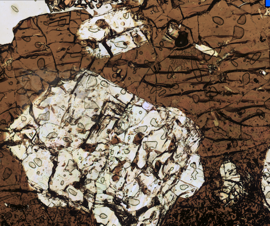
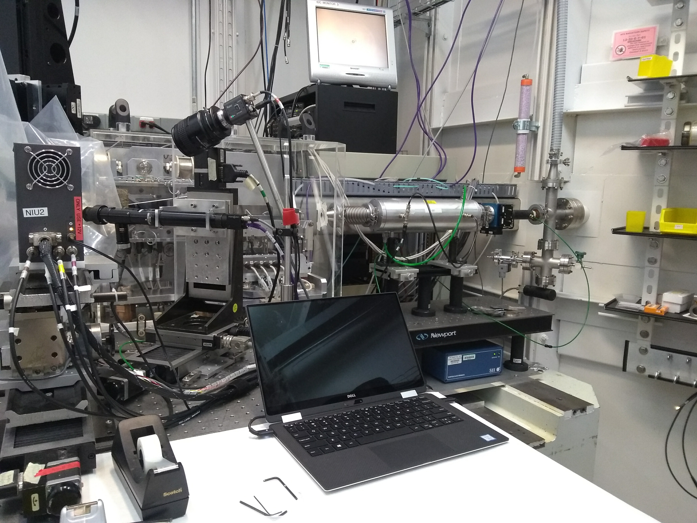

Welcome!
We study how magmas on our planet behave during mantle melting and early differentiation. We focus particularly on how volatile elements interact with silicate melts during magmatic evolution. See below for some of our current work.
Sulfur and the redox evolution of arc magmas
 Petrologists have observed for a long time that arc magmas are commonly oxidized relative to mid-ocean ridge basalts, but the processes that drive this difference are still debated. The transport of sulfur in and out of arc magmas during subducting slab dehydration, magma degassing, and sulfide mineral precipitation can influence the redox state of magmas. Conversely, the solubility of sulfur in magmas is closely tied to melt oxidation state, and sulfur can act as a valuable tracer of magma redox evolution. These projects use the geochemistry of primitive melt inclusions to tease apart these processes, yielding valuable insights in magma evolution that have implications for things like volcano gas monitoring, ore deposit formation, and arc magma petrogenesis.
Petrologists have observed for a long time that arc magmas are commonly oxidized relative to mid-ocean ridge basalts, but the processes that drive this difference are still debated. The transport of sulfur in and out of arc magmas during subducting slab dehydration, magma degassing, and sulfide mineral precipitation can influence the redox state of magmas. Conversely, the solubility of sulfur in magmas is closely tied to melt oxidation state, and sulfur can act as a valuable tracer of magma redox evolution. These projects use the geochemistry of primitive melt inclusions to tease apart these processes, yielding valuable insights in magma evolution that have implications for things like volcano gas monitoring, ore deposit formation, and arc magma petrogenesis.
Iron and sulfur redox state during the cooling of basaltic melts
Measuring the relative concentrations of redox-sensitive elements like sulfur (present at S6+ and S2- in basaltic melts) and iron (present as Fe3+ and Fe2+ in basaltic melts) in volcanic glass is an incredibly precise and powerful means to study melt redox state. However, this is only true if volcanic glass accurately records the conditions of the melt at higher temperatures. In this work, we use the rapidly quenched rims of seafloor pillows to test whether sulfur and iron valence state in basaltic melts undergo changes during the processes of cooling and quenching to volcanic glass.
Micro-analysis of volcanic glass
The chemistry of volcanic glass is an incredibly useful record of a magmatic system. As part of our work, we are interested in pushing the boundaries of what we can learn from seafloor glasses and crystal-hosted glass inclusions. We use techniques like XANES, SIMS, LA-ICPMS, and EPMA to study the structure, isotopic chemistry (e.g. δ34S), and trace element geochemistry (including metals such as Cu, Zn, W, Mo, etc.) of basaltic melts.